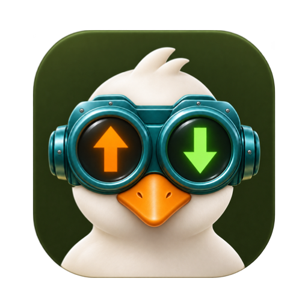

Excludes
node_modules, .git, *.log stay home, per bookmark.

Techno Goose DownloadThe dual-pane file transfer client for Mac.
Sync without fear.

01 / Dual pane
Drag files between them, or in from Finder. Every folder's real size is worked out in the background, so you always know what you're about to move.
 assets · 19,4 MB
goosepond.local
13 items
assets · 19,4 MB
goosepond.local
13 items

02 / One-click sync
03 / Undo + timeline
Replaced files are kept first, and a sync never deletes anything. Each connection gets a timeline of what changed, grouped by day.

04 / Four browsers
Drag panes by their grip, resize them, and sync any two neighbours.

05 / Favorites
The sidebar shows where it lives in bold and the end of its path below. Right-click a server folder to make it the start folder for that bookmark.
 ★ /public_html/assets/img
★ /public_html/assets/img
06 / Themes
Nova Midnight


07 / 1984 mode
Pick Macintosh 512K and the whole app goes greyscale, in Chicago, with pinstripes on the active pane. No colour was harmed.
08 / Settings
Press ⌘, for the theme, hidden files, folder sizes, a sound when a sync is done, and how many syncs you can undo.


09 / And more
node_modules, .git, *.log stay home, per bookmark.
Folder pairs upload changes as soon as you save.
Open a server file in its default app; every save goes back up.
Dated snapshots of a server. Unchanged files are APFS clones, so only changes download.
Bookmarks sync between your Macs with a daily backup. Passwords stay in the Keychain.
Bookmarks › Import from Cyberduck brings your SFTP, FTP, FTPS and WebDAV bookmarks along.
SFTP uses the system sftp, so your keys and config just work.
Show or hide them with ⇧⌘. like in Finder.
Right-click › Set as Start Folder.
10 / The film